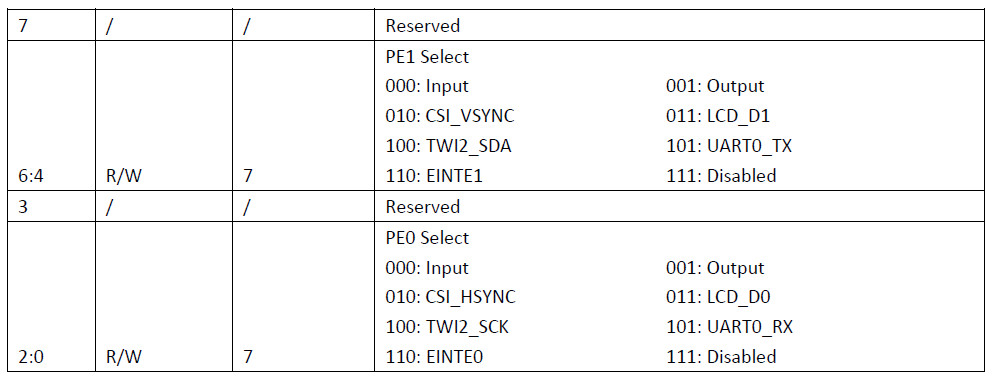
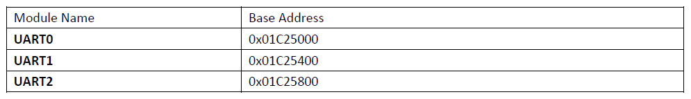
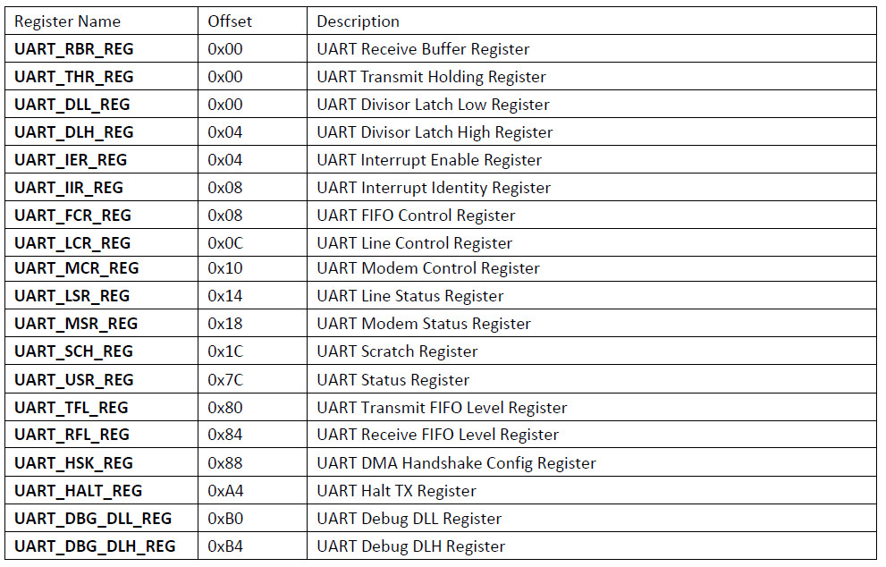

參考資料：
http://nano.lichee.pro/
https://mangopi.org/mangopi_r
UART0腳位位於PE0、PE1



PLL = 24MHz*N*K/M
0x80041800:
K = 1
M = 1
N = 24
PLL_PERIPH = 24MHz*25 = 600MHz
AHB_CLK = PLL_PERIPH/(AHB_PRE_DIV*AHB_CLK_DIV_RATIO) = 600MHz/(3*1) = 200MHz
APB_CLK = AHB_CLK/APB_CLK_RATIO = 200MHz/2 = 100MHz
0x00003180:
AHB_PRE_DIV = 3
APB_CLK_RATIO = 2
AHB_CLK_DIV_RATIO = 1
Baudrate = APB_CLK/(16*divisor) = 100MHz/(16*54) = 115741 ~= 115200
main.s
.global _start
.equ CCU_BASE, 0x01c20000
.equ GPIO_BASE, 0x01c20800
.equ UART0_BASE, 0x01c25000
.equ PLL_PERIPH_CTRL_REG, 0x0028
.equ AHB_APB_HCLKC_CFG_REG, 0x0054
.equ BUS_CLK_GATING_REG2, 0x0068
.equ BUS_SOFT_RST_REG2, 0x02d0
.equ PE, (0x24 * 4)
.equ CFG0, 0x00
.equ DATA, 0x10
.equ RBR, 0x0000
.equ DLL, 0x0000
.equ DLH, 0x0004
.equ IER, 0x0004
.equ IIR, 0x0008
.equ LCR, 0x000c
.equ MCR, 0x0010
.equ USR, 0x007c
.arm
.text
_start:
.long 0xea000016
.byte 'e', 'G', 'O', 'N', '.', 'B', 'T', '0'
.long 0, __spl_size
.byte 'S', 'P', 'L', 2
.long 0, 0
.long 0, 0, 0, 0, 0, 0, 0, 0
.long 0, 0, 0, 0, 0, 0, 0, 0
_vector:
b reset
b .
b .
b .
b .
b .
b .
b .
reset:
ldr r0, =CCU_BASE
ldr r1, =0x80041800
str r1, [r0, #PLL_PERIPH_CTRL_REG]
ldr r1, =0x00003180
str r1, [r0, #AHB_APB_HCLKC_CFG_REG]
ldr r0, =GPIO_BASE
ldr r1, =0x55
str r1, [r0, #(PE + CFG0)]
ldr r0, =CCU_BASE
ldr r1, =(1 << 20)
str r1, [r0, #BUS_CLK_GATING_REG2]
str r1, [r0, #BUS_SOFT_RST_REG2]
ldr r0, =UART0_BASE
ldr r1, =0x00
str r1, [r0, #IER]
ldr r1, =0xf7
str r1, [r0, #IIR]
ldr r1, =0x00
str r1, [r0, #MCR]
ldr r1, [r0, #LCR]
orr r1, #(1 << 7)
str r1, [r0, #LCR]
ldr r1, =54
str r1, [r0, #DLL]
ldr r1, =0x00
str r1, [r0, #DLH]
ldr r1, [r0, #LCR]
bic r1, #(1 << 7)
str r1, [r0, #LCR]
ldr r1, [r0, #LCR]
bic r1, #0x1f
orr r1, #0x03
str r1, [r0, #LCR]
ldr r0, =UART0_BASE
ldr r2, =hello
1:
ldr r1, [r0, #USR]
tst r1, #(1 << 1)
beq 1b
ldrb r1, [r2]
strb r1, [r0, #RBR]
add r2, #1
cmp r1, #0
bne 1b
main:
b main
.align
hello: .asciz "Hello, world!"
.end
Baudrate 115200bps